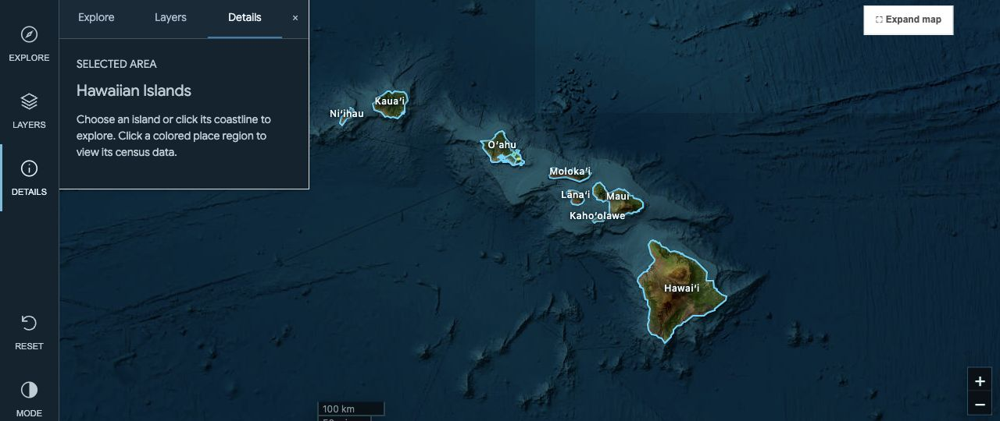
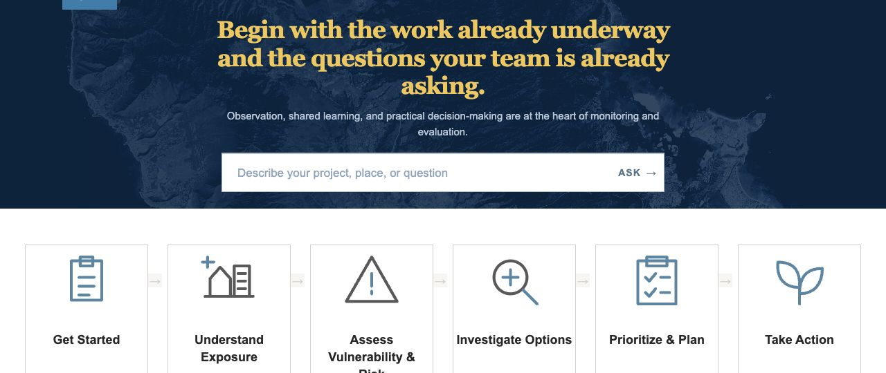
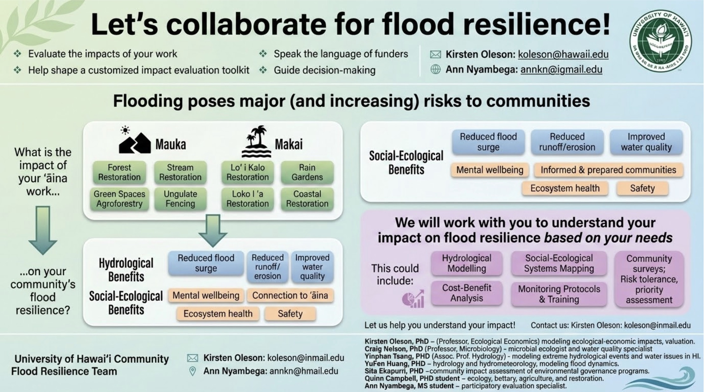

Tools Explorer
Find maps, evaluation tools, and guidance to support your work with nature-based solutions.

Hawaiʻi Map
Explore islands, place boundaries, and local geographic context.

Project Evaluation
Work through climate risks, system relationships, indicators, and project outcomes.

NbS Assistant
Explore the assistant interface and reference materials for questions about nature-based solutions.

Tutorials
Browse step-by-step starting points for monitoring and evaluation.